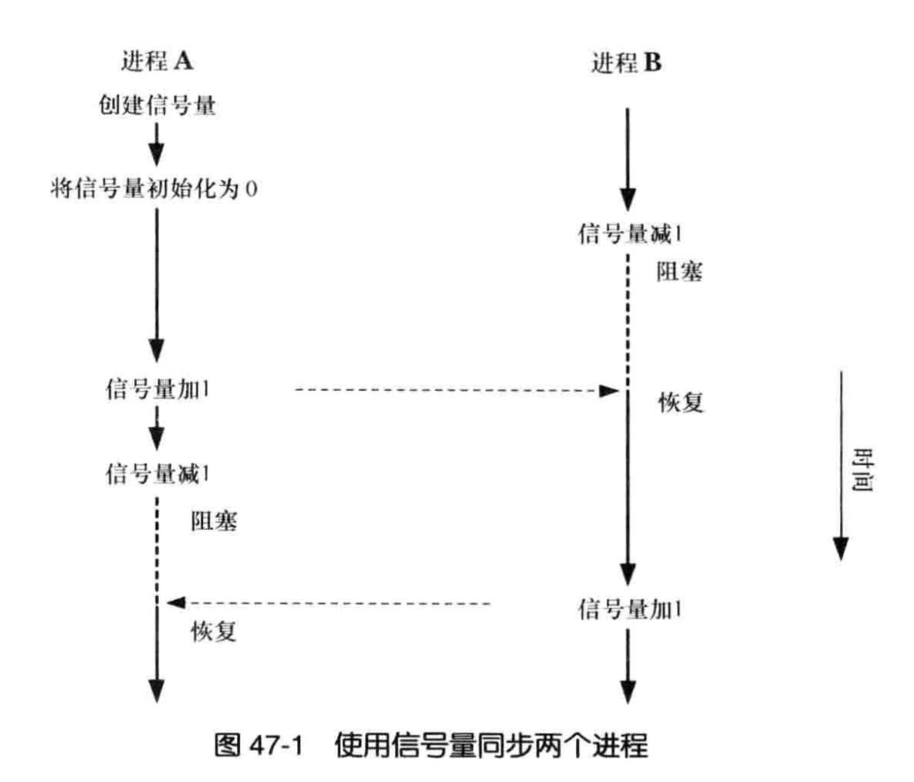

linux中的多线程
相关API
Linux对线程的操作封装在pthread.h这个头文件中。
创建
pthread_t pthread_t1, pthread_t2;
pthread_create(&pthread_t1, NULL, (void *) produce, NULL);
join
You can wait for a thread to finish by calling its join() method. For instance, in the following code, the current thread will wait until thread2 finishes before printing Done.
thread2.start();
// do more stuff here
thread2.join();
System.out.println("Done");
线程同步
race condition
//
// Created by xdy on 16/11/23.
//
#include "stdio.h"
#include "pthread.h"
#include "time.h"
int shared_int;
void increase(void) {
printf("current thread id: %d,init shared_int: %d\n",pthread_self(), shared_int);
printf("current thread id: %d,start shared_int: %d\n",pthread_self(), shared_int);
for (int i = 0; i < 100000; ++i) {
shared_int += 1;
}
printf("end shared_int: %d\n", shared_int);
}
int main() {
pthread_t pthread_t1, pthread_t2, pthread_t3;
pthread_create(&pthread_t1, NULL, (void *) increase, NULL);
pthread_create(&pthread_t2, NULL, (void *) increase, NULL);
pthread_create(&pthread_t3, NULL, (void *) increase, NULL);
pthread_join(pthread_t1, NULL);
pthread_join(pthread_t2, NULL);
pthread_join(pthread_t3, NULL);
printf("shared_int: %d", shared_int);
return 0;
}
输出
/Users/xdy/Library/Caches/CLion2016.1/cmake/generated/algo-6e4e421/6e4e421/Debug0/algo
current thread id: 528384,init shared_int: 0
current thread id: 1064960,init shared_int: 0
current thread id: 1601536,init shared_int: 0
current thread id: 528384,start shared_int: 0
current thread id: 1064960,start shared_int: 0
current thread id: 1601536,start shared_int: 0
end shared_int: 100025
end shared_int: 115999
end shared_int: 140708
shared_int: 140708
Process finished with exit code 0
上边三个线程产生了race condition, 导致最后的结果不可预测。
mutex
//
// Created by xdy on 16/11/23.
//
#include "stdio.h"
#include "pthread.h"
#include "time.h"
int shared_int;
pthread_mutex_t mutex_t;
void increase(void) {
printf("current thread id: %d,init shared_int: %d\n",pthread_self(), shared_int);
pthread_mutex_lock(&mutex_t);
printf("current thread id: %d,start shared_int: %d\n",pthread_self(), shared_int);
for (int i = 0; i < 100000; ++i) {
shared_int += 1;
}
printf("end shared_int: %d\n", shared_int);
pthread_mutex_unlock(&mutex_t);
}
int main() {
pthread_mutex_init(&mutex_t, NULL);
pthread_t pthread_t1, pthread_t2, pthread_t3;
pthread_create(&pthread_t1, NULL, (void *) increase, NULL);
pthread_create(&pthread_t2, NULL, (void *) increase, NULL);
pthread_create(&pthread_t3, NULL, (void *) increase, NULL);
pthread_join(pthread_t1, NULL);
pthread_join(pthread_t2, NULL);
pthread_join(pthread_t3, NULL);
printf("shared_int: %d", shared_int);
return 0;
}
输出
/Users/xdy/Library/Caches/CLion2016.1/cmake/generated/algo-6e4e421/6e4e421/Debug0/algo
current thread id: 528384,init shared_int: 0
current thread id: 1064960,init shared_int: 0
current thread id: 1601536,init shared_int: 0
current thread id: 528384,start shared_int: 0
end shared_int: 100000
current thread id: 1064960,start shared_int: 100000
end shared_int: 200000
current thread id: 1601536,start shared_int: 200000
end shared_int: 300000
shared_int: 300000
Process finished with exit code 0
通过结果可以看出来线程的内部的代码可以被"原子性"的执行,最后的结果也变成了预期的300000.
另外还有两个函数:
int pthread_mutex_trylock(pthread_mutex_t *);
这个函数在加锁失败时不会会让线程进入睡眠状态，它直接失败返回，所以需要自己判断返回值。
int pthread_mutex_timedlock(pthread_mutex_t *restrict mutex,const struct timespec *restrict tsptr);
使用这个函数可以指定一个超时时间，在这个超时时间到来之前如果没有获得锁，则失败返回，不会一直阻塞.注意这个时间不是时间段,而是一个阻塞到时间点的时间戳.
释放资源
pthread_mutex_destroy(pthread_mutex_t *mutex);
如果在初始化互斥量的时候，分配了其它资源，需要使用上面这个函数来释放掉这些资源。这个函数执行之后，互斥量变成了未初始化的状态，对它执行操作的结果是未定义的。如果需要再次使用这个互斥量的话，可以再次执行初始化函数来初始化。
condition variable
//
// Created by xdy on 16/11/23.
//
#include "stdio.h"
#include "pthread.h"
#include <unistd.h>
pthread_cond_t cond_t = PTHREAD_COND_INITIALIZER;
pthread_mutex_t mutex_t;
void emit(void) {
// sleep 3s
for (int i = 0; i < 3; ++i) {
printf("sleep %d s\n", i);
sleep(1);
}
pthread_mutex_lock(&mutex_t);
pthread_cond_signal(&cond_t);
puts("emmit");
pthread_mutex_unlock(&mutex_t);
}
void wait_signal(void) {
pthread_cond_wait(&cond_t, &mutex_t);
puts("emmited");
}
int main() {
pthread_t emit_t, wait_signal_t;
pthread_mutex_init(&mutex_t, NULL);
pthread_create(&emit_t, NULL, (void *) emit, NULL);
pthread_create(&wait_signal_t, NULL, (void *) wait_signal, NULL);
pthread_join(emit_t, NULL);
pthread_join(wait_signal_t, NULL);
return 0;
}
输出
```
/Users/xdy/Library/Caches/CLion2016.1/cmake/generated/algo-6e4e421/6e4e421/Debug0/algo
sleep 0 s
sleep 1 s
sleep 2 s
emmit
emmited
Process finished with exit code 0
```
wait_emit直到emit触发过后才执行,线程的执行顺序和我们预测的一样。一定要注意emit时候有cond在wait状态，否则emit不会产生效果。
信号量

P原语表示试图进入使用资源，V原语表示添加生产资源。
P，V名称的来历：Dijkstra, one of the inventors of semaphores, used P and V. The letters come from the Dutch words Probeer (try) and Verhoog (increment).
//
// Created by xdy on 16/11/24.
//
#include <stdio.h>
#include <pthread.h>
#include <semaphore.h>
#include <unistd.h>
#include <time.h>
sem_t sem_t1;
char *get_time() {
time_t rawtime;
struct tm *timeinfo;
time(&rawtime);
timeinfo = localtime(&rawtime);
char *now = asctime(timeinfo);
return now;
}
void produce(void) {
while (1) {
sleep(1);
sem_post(&sem_t1);
printf("thread produce at %s\n", get_time());
}
}
void consume(void) {
while (1) {
sleep(3);
sem_wait(&sem_t1);
printf("thread consume at %s\n", get_time());
}
}
int main() {
puts("semaphore");
sem_init(&sem_t1, 0, 0);
pthread_t pthread_t1, pthread_t2;
pthread_create(&pthread_t1, NULL, (void *) produce, NULL);
pthread_create(&pthread_t2, NULL, (void *) consume, NULL);
pthread_join(pthread_t1, NULL);
pthread_join(pthread_t2, NULL);
}
xudy@iZ286wee5zoZ ~/tmp> ./sem
semaphore
thread produce at Fri Nov 25 00:05:50 2016
thread produce at Fri Nov 25 00:05:51 2016
thread consume at Fri Nov 25 00:05:52 2016
thread produce at Fri Nov 25 00:05:52 2016
thread produce at Fri Nov 25 00:05:53 2016
thread produce at Fri Nov 25 00:05:54 2016
thread consume at Fri Nov 25 00:05:55 2016
上边是在我电脑上的运行结果, sem_post 其实是一个P操作, 可以让sem_t1加1.
sem_wait调用时候根据当前sem_t1的值不同有两种变现:
当sem_t1>0时候, 直接sem_t1 -= 1, 然后接着向下执行;
当sem_t1<=0时候, 阻塞当前线程, 直到sem_t1的值大于0, 然后开始执行.
todo:// 当两个线程分别被阻塞时候, 是不是先被阻塞的那个先执行? 还是两个进入race condition?
ref:
http://www.cs.cmu.edu/afs/cs/academic/class/15492-f07/www/pthreads.html#SCHEDULING
http://stackoverflow.com/a/14925150/6877366
http://www.cppblog.com/Solstice/archive/2013/09/09/203094.html

Copyright © 2015 Powered by MWeb, Theme used GitHub CSS.